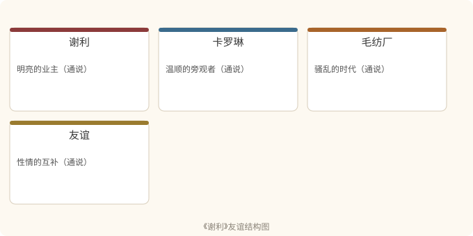

谢利
一、基本信息
| 作者 | 夏洛蒂·勃朗特 |
|---|---|
| 成书/出版 | 1849年（作者页注记：Britannica 列举——谢利 (1849)） Charlotte Brontë — Encyclopaedia Britannica（百科全书） |
| 国别/地区 | 英国 |
| 时代 | 近代 · 19世纪40年代末 |
| 体裁 | 长篇小说 |
| 语言 | 英语 |

《谢利》友谊结构图（主题·结构图）
二、创作背景
作者页注记：谢利 (1849)、维莱特 (1853)——'后续长篇（Britannica）'。
Britannica：夏洛蒂·勃朗特——《简·爱》作者（作者页语境）。
题材（通说待核）：约克郡毛纺业萧条期——两个女子的友谊与工厂骚乱。
三、内容脉络
（通说待核）卡罗琳与谢利：性情相反的友谊。
（通说待核）1811-12年卢德骚乱背景。
四、主要人物表
| 人物 | 身份 | 说明 |
|---|---|---|
| 谢利·基尔达 | 女地主 | （通说待核） |
| 卡罗琳·赫尔斯通 | 牧师侄女 | （通说待核） |
五、主题与艺术特点
- 工业化的社会图景（通说待核）。
- 女性友谊（通说待核）。
- '社会小说'的勃朗特变体（通说待核）。
六、影响与评论
- Britannica：'后续长篇'（作者页注记）。
Charlotte Brontë — Encyclopaedia Britannica（百科全书） - Britannica：《简·爱》为代表作（作者页交叉）。
Charlotte Brontë — Encyclopaedia Britannica（百科全书）
七、阅读建议
难点
- 卢德运动史。
- 与《简·爱》的文体差异。
- 《谢利》中译本（人民文学等——通说待核）。
- 英文原版（公有领域）。
勃朗特第二作；与《简·爱》对读。
八、待核实
- 谢利/卡罗琳人名核对（通说）。
- 1849年出版细节待核。
- 卢德运动细节待核。